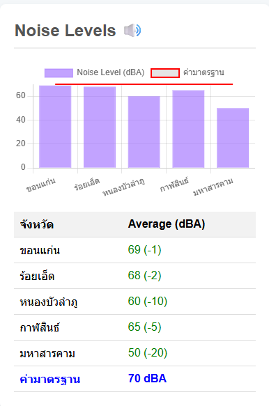

รายงานคุณภาพสิ่งแวดล้อม: การจัดการมลพิษทางเสียง

ภาพที่ 5: ผลระดับเสียงรบกวนเฉลี่ยของ 5 จังหวัด
บทนำ
รายงานฉบับนี้จัดทำขึ้นเพื่ออภิปรายผลและให้ข้อเสนอแนะสำหรับการจัดการมลพิษทางเสียงในพื้นที่ 5 จังหวัดได้แก่ ขอนแก่น ร้อยเอ็ด หนองบัวลำภู กาฬสินธ์ และมหาสารคาม โดยใช้ข้อมูลจากผลการตรวจวัดระดับเสียงรบกวนเฉลี่ย เทียบกับค่ามาตรฐานที่กำหนดไว้ที่ 70 dBA เป็นเกณฑ์ในการประเมิน
การอภิปรายผล
ภาพที่ 5 แสดงระดับเสียงรบกวนเฉลี่ยของ 5 จังหวัด โดยมีค่ามาตรฐานอยู่ที่ 70 dBA
- โดยรวมแล้ว ทุกจังหวัดมีระดับเสียงรบกวนเฉลี่ยต่ำกว่าค่ามาตรฐานที่ 70 dBA แสดงว่าสถานการณ์มลพิษทางเสียงในพื้นที่เหล่านี้ยังอยู่ในเกณฑ์ที่ยอมรับได้
- มหาสารคาม มีระดับเสียงรบกวนต่ำที่สุดที่ 50 dBA ซึ่งต่ำกว่าค่ามาตรฐานถึง 20 หน่วย
- ขอนแก่น และ ร้อยเอ็ด มีระดับเสียงรบกวนสูงที่สุดในกลุ่มนี้ โดยอยู่ที่ 69 dBA และ 68 dBA ตามลำดับ แม้จะยังต่ำกว่ามาตรฐาน แต่ก็เข้าใกล้ขีดจำกัดที่กำหนดไว้มากที่สุด
ข้อเสนอแนะเพื่อการจัดการมลพิษทางเสียง
เพื่อรักษาระดับเสียงให้อยู่ในเกณฑ์มาตรฐานและป้องกันไม่ให้เกิดปัญหาในอนาคต จึงมีข้อเสนอแนะดังต่อไปนี้:
การเฝ้าระวังอย่างต่อเนื่อง
- ควรมีการตรวจวัดและติดตามอย่างสม่ำเสมอ โดยเฉพาะในพื้นที่ที่มีแนวโน้มระดับเสียงสูง เช่น ขอนแก่นและร้อยเอ็ด เพื่อป้องกันไม่ให้เกินค่ามาตรฐานในอนาคต
การควบคุมแหล่งกำเนิดเสียง
- ควรพิจารณามาตรการควบคุมแหล่งกำเนิดเสียงหลัก เช่น การจราจร การก่อสร้าง และกิจกรรมทางอุตสาหกรรม โดยอาจส่งเสริมการใช้เทคโนโลยีที่ลดเสียงรบกวน
การวางผังเมือง
- ควรมีการวางผังเมืองโดยคำนึงถึงการจัดสรรพื้นที่สีเขียว หรือแนวกันชนเสียง เพื่อช่วยลดทอนความดังของเสียงในเขตชุมชน
การบังคับใช้กฎหมาย
- เพิ่มความเข้มงวดในการบังคับใช้กฎหมายที่เกี่ยวข้องกับมลพิษทางเสียง เพื่อควบคุมกิจกรรมที่อาจก่อให้เกิดผลกระทบต่อประชาชน
การสร้างความตระหนักรู้
- รณรงค์ให้ความรู้แก่ประชาชนถึงผลกระทบของมลพิษทางเสียงต่อสุขภาพ เพื่อส่งเสริมการมีส่วนร่วมในการแก้ไขปัญหาและลดแหล่งกำเนิดเสียงที่ไม่จำเป็น